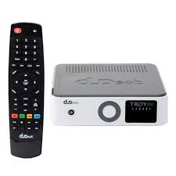

Receptor Duosat é um produto especifico, voltado exclusivamente para pessoas que desejam ter a máxima eficiência e qualidade em sua programação, e hoje o carro chefe da marca o Duosat Troy Legacy é o produto mais vendido da Duosat, não apenas por que ele é um produto de várias gerações, mais sim pela sua forte reputação que é a mesma de geração em geração. O Troy Legacy é um receptor robusto e completo, voltado para quem deseja ter tv de verdade, com recursos inovadores que apenas a Duosat consegue oferecer em uma qualidade indiscutivel. Tenha uma estabilidade de canais extraordinária, em IKS e ou SKS. Se você ainda não sabe o que é IKS vou te explicar: Os receptores Duosat podem ser usados com uma antena de canais e o desbloqueio dos canais via internet, dai vem o termo IKS, para essa modalidade recomenda-se que a internet tenha uma velocidade minima de 1mb. Já na tradicional forma de uso SKS, utiliza-se duas antenas sem a necessidade de acesso a internet. No entanto para quem tem acesso a internet pode desfrutar de mais recursos desse receptor incríve como: Atualização automática, esqueça atualizações complicadas ou ter que chamar tecnicos sempre que for necessário atualizar seu receptor Duosat. O Troy Legacy tem atualização automática, e sempre que necessário atualizar ele mesmo vai te avisar e fazer o procedimento de forma automática. Extremamente simples e prático.
Receptor Duosat Next UHD Lite Wi-Fi Android com Tecnologia ACM Agora, o seu NEXT, mais leve e acessível do que você esperava!. O Next UHD Lite foi desenvolvido para ser o mais compatível com todos os aplicativos de Streaming da sua preferência, como XBMC, Netflix, Hulu, Kodi, Dailymotion, YouTube e outros aplicativos de Streaming suportados pelo seu sistema Android. MIndshop Ecommerce , é uma empresa idônea e a Loja Virtual esta On-line a mais de 3 anos ao qual ja atendeu mais de 70 mil Cliente em todo Brasil , possuindo todos os selos exigidos para uma compra segura. Aproveite agora mesmo e faça parte do seleto grupo de clientes que comprou com o melhor preço.
Duosat Maxx HD é o novo integrante da família de receptores Duosat, com sua construção em metal que lembra o antigo Duosat Trend Max, mais totalmente renovado por dentro. Seu novo processador Dual Core de 1GHz da conta de todas as tarefas mais difíceis. O Duosat Maxx HD foi criado para uma única missão, satisfazer as pessoas mais exigentes com um preço totalmente acessível. Sua definição de imagem em HD oferece riqueza de detalhes em cada cena, fazendo você vibrar com tanta nitidez e brilho! Duosat Maxx HD é 3D e isso vai dar um realismo insano aos seus filmes, assista e se envolva nas cenas como se estive lá, conteúdo 3D é a nova forma de assistir seus filmes favoritos sem ir ao cinema diretamente do seu receptor Duosat Maxx HD.
Cine HD 3 é o mais novo integrante da familia, esse receptor tocomlink faz parte da nova geração de receptores que a marca trouxe para o mercado mantendo as excelentes caracteriscas dos modelos Tocom, a durabilidade e estabilidade. Tocomlink preço de receptor de entrada, mais com a expertise e experiência de marca Premium com suporte oficial da marca, e o renomado servidor tsscam que faz um excelente trabalho na hora de você assistir seus canais favoritos. Na hora de escolher seu receptor de satélite para ver seus canais de tv sem mensalidade, escolha uma marca de confiança, para isso você pode contar com a Tocomlink que em vários anos vem desenvolvendo produtos modernos e com excelente desempenho para que você possa aproveitar os melhores momentos em familia.
Amado por milhares de pessoas e longe dos olofotes por algum tempo, o extraordinário receptor Duosat Prodigy agora retorna renovado e atende pelo nome de Prodigy S, seu desig mudou muito e agora é extremamente refinado e de muito bom gosto. Em sua frente ostenta um display 2,2" onde você terá detalhes dos canais e menus de configurações em um sistema de informações mais moderno diferente de qualquer outro receptor que você ja tenha visto que não seja da linha Duosat. Na faixa de preço do Duosat Prodigy S esse é o único receptor a ostentar esse recurso que o deixa ainda mais chamativo e muito bem acabado. Controle tudo sem controle, o Duosat Prodigy S possui botões laterais com multi funções, onde é possivel configurar absolutamente tudo sem a necessidade de um controle novamente mostrando que estamos falando de um receptor moderno, completo e muito a frente de seus concorrentes.
O receptor FTA Azamerica Champions apresenta design compacto, elegante e leve, que o torna fácil de acomodar em qualquer espaço. Permite captar sinais decodificados de canais de alta definição Full HD 1080p e IPTV, que proporciona ao usuário a melhor programação de televisão. Funciona com antena ou com internet, além do adaptador Wireless.
Novidade na area, o Team Azamerica tem mais um super lançamento para IPTV no mercado, agora você conta também com o mais novo Azamerica Silver IPTV, praticidade na sua casa, não precisa de antenas, apenas conexão com a internet e só, isso mesmo, só... Liberdade de assistir tv em qualquer lugar com acesso a interent, leve seu receptor com você para aquele churrasco com futebol, em suas viagens, na casa dos amigos pra curtir aquela sessão em casa e uma infidade de outras opções seu Azamerica Silver IPTV sempre vai estar com você.
Tocombox Energy HD faz parte da linha de receptores de satélite de sucesso da Tocombox, o Energy HD é acm e já é preparado para o novo satélite acm 63w, podendo ser usado via sks no 58w 63w ou 107w, além de duas antenas também é possível usar seu Tocombox Energy HD via iks com uma antena e internet. O Energy HD é um receptor completo e que além dos canais oferece também recursos importantes como iptv, on demand, atualização automática, tudo para que você tenha o máximo de opções de programação sem se preocupar em baixar filmes pela internet ou outros conteúdos.
Cinebox Fantasia Z é o novo receptor intermediario da Cinebox, um modelo completo com suporte a canais sks / iks e iptv. Cinebox Fantasia agora Z é a nova geração de um receptor muito popular entre as marcas mais conhecidas do momento, esse receptor possui um acabamento premium com muita personalidade e estilo, sua linhas mais arredondadas dão um ar de leveza ao mesmo tempo que sua frente mais rustica um aspecto de robustez. O novo Cinebox Fantasia Z é sem dúvida um receptor completo e moderno com foco no usuário final, isso por que mesmo após muitas mudanças estéticas a linha Cinebox não alterou sua interface, mantendo a tradicional tela simples de operar e com todos os recursos fáceis de ser encontrado. Com esse receptor cinebox você vai poder ter acesso a mais de 290 canais via satélite, on demand com milhares de filmes e séries online.
Azamerica Gold é a nova aposta da Azamerica para sua linha de receptores chegando como um grande lançamento da marca agora no ano de 2019, a principio podemos destacadar uma mudança de cultura aqui, e é sua conexão wifi, que antes a marca adotava o padrão wifi externo através de antena wifi usb, e dessa vez decidiu manter como wifi iinterno já integrado como vem acontecendo com a maioria das marcas. Mantendo a confiabilidade da marca, aliás time que está ganhando não se mexe não é? Temos aqui o excelente servidor Gshare fazendo assim parte das marcas que usam servidor gshare. Outro ponto que merece destaque é seu novo controle agora mais arredondado nas bordas e mais confortável, abandonando o seu controle antigo mais quadrado que acompanhou dezenas de modelos azamerica por anos. Dessa vez a Azamérica não trouxe um modelo 4K, e sim Full HD 1080p mais possue ainda assim uma excelente qualidade de imagem e está preparado para trazer conteúdo seja via satélite ou streaming como já vem acontecendo nos modelos da linha Azamérica a algum tempo. O Azamerica Gold chega logo após o lancamento do Azamerica Beats porém cada um possui uma proposta diferente para usuários diferentes, enquanto o Azemerica Gold é mais refinado e possui melhor acabamento, o Azamerica Beats traz uma proposta mais voltada para o custo beneficio.